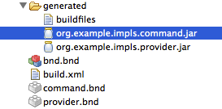

An epic split between OSGi tooling
Eclipse PDE and bndtools
experiences from a ongoing migration - started end of 2012
created by Peter Kirschner for EclipseCon Europe 2014
copyright for Epic Split Theme is with Volvo Trucks
printable version
Table of contents
- Motivation
- Comparison PDE to bndtools
- Development Setup & Update
- Programming
- Conclusion
Why bndtools
| automated import package analysis including versioning |  |
| powerful OSGi bundle repository management | |
| instant Jar bundle creation |  |
| annotation based Declarative Service implementation |
Project Layouts
 bnd allows single or multiple bundles from one project
build path can be configured on eclipse project level
bnd allows single or multiple bundles from one project
build path can be configured on eclipse project level
synchronize compile settings
JDT/PDE compilation on target
<target_prj>/workspace.target
<pde_prj>/.classpath
<pde_prj>/.settings/org.eclipse.jdt.core.prefs
<pde_prj>/META-INF/MANIFEST.MF -> Bundle-RequiredExecutionEnvironment
<pde_prj>/build.properties -> jre.compilation.profile
bndtools
<cnf_prj>/ext/repositories.bnd
<bnd_prj>/.classpath
<bnd_prj>/.settings/org.eclipse.jdt.core.prefs
<bnd_prj>/bnd.bnd
Synchronize between JDT/PDE and bndtools compilation via import of the JDT settings
Our Migration Progress
Volvo Trucks - Making of ...